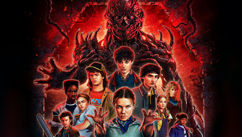
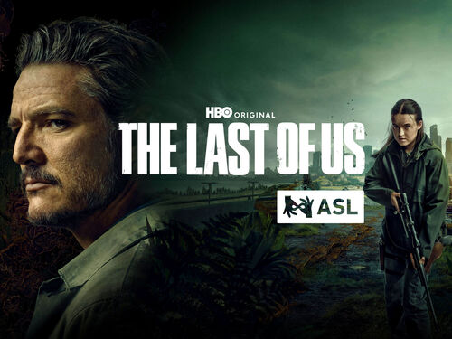

Valora tus series favoritas
Descubre qué opinan otros fans, comparte reseñas y sube al ranking tus series de televisión preferidas.
Descubre qué opinan otros fans, comparte reseñas y sube al ranking tus series de televisión preferidas.
★ 4.8 / 5
Thriller político de ciencia ficción donde múltiples realidades se cruzan en una lucha por el poder.
Ver detalles
★ 4.5 / 5
Misterio, amistad y terror ochentero en Hawkins, con criaturas del Mundo del Revés.
Ver detalles
★ 4.7 / 5
Adaptación del famoso videojuego, en un mundo postapocalíptico lleno de radiación y humor negro.
Ver detalles
★ 4.7 / 5
Drama postapocalíptico donde Joel y Ellie intentan sobrevivir a una pandemia devastadora.
Ver detalles
★ 4.6 / 5
Sueño, una de las entidades eternas, escapa tras décadas de cautiverio y debe restaurar su reino mientras enfrenta amenazas que afectan al mundo humano y al onírico.
Ver detalles
★ 4.7 / 5
Sigue la transformación de Cassian Andor desde un ladrón sin rumbo hasta convertirse en un agente clave de la Rebelión contra el Imperio.
Ver detalles